YIU WAI KONG
CROWLEY
Assistant BIM Manager | CG Artist
Msc BIM / BIM Trainer / CCBM / CCBC / PMP® / BEAM Affiliate
Bridging the gap between 3D visual storytelling and advanced Building Information Modelling.
Core Software Skillset
Career Evolution
A comprehensive multidisciplinary journey bridging high-end CG visual storytelling, ISO standards, professional training, and full-scale BIM project leadership.
September 2023 — Present
Part-Time CCBC Instructor
Hong Kong Interior Design and Architecture Institute (HKIAI)
Instructor for CIC Accredited Professional Certificate in BIM Coordination (QF4 & CEF), training industry talents.
September 2023 — Present
Assistant BIM Manager
Manly-Tech Engineering LTD
- Full-Spectrum Leadership: Lead complex multi-disciplinary projects, drive ISO 19650 Certification compliance, and establish company-wide BIM standards and BEP.
- Award-Winning Delivery: Autodesk BIM Award 2024 Winner - Automated Carpark A and B at HKBCF.
- Project Leadership: Overseeing 10+ mega-scale infrastructure, aviation, housing, and healthcare BIM portfolios across Hong Kong and overseas (see Project Highlights below).
- Tender & Bid Strategy:Formulated technical proposals by analyzing scoring criteria and optimizing resource allocation to increase bid success rates.
- BIM Automation R&D: Utilized Claude, Cursor, and Monica.im to assist in code generation, script development, and intelligent data processing for building information modeling.
July 2021 — August 2023
BIM Coordinator
Manly-Tech Engineering LTD
- Managed BIM coordination, clash detection, and 4D construction programming simulations (Synchro 4D).
- Integrated interactive tech by developing VR Safety Training Games (Unity) and digital review workflows.
November 2020 — July 2021
BIM Modeller
Manly-Tech Engineering LTD
Successfully transitioned into the BIM industry, leveraging strong spatial and modeling foundations to execute high-precision construction models.
August 2019 — August 2020
CG Artist
EYEEYESTUDIO
Spearheaded high-impact visual storytelling and commercial real estate advertising. Self-taught Revit during a pivotal property advertisement project, seamlessly exporting BIM data to elevate cinematic visual quality—igniting the transition into full-time BIM expertise.
July 2018 — August 2019
Production Assistant
Lovely Tour Company Ltd
Managed pre-production, on-set execution, logistics, and visual storytelling consistency.
February 2014 — August 2016
Architectural Designer Assistant
Greater Design Consultants
Generated detailed CAD designs, 3D modeling, and rendering with on-site inspection duties.
Credentials, Education & Licenses
A solid academic foundation coupled with top-tier professional certifications and statutory qualifications.
Education & Degrees
MSc in BIM Management & Integrated Digital Delivery
Middlesex University London
Bachelor of Fine Arts (Animation & Visual Effects)
The Open University of Hong Kong
Associate Degree of Science (Creative Animation)
Chinese University of Hong Kong
Statutory Licenses
Professional Certifications & Memberships
-
CIC-Certified BIM Manager (CCBM) CCBM26022
-
CIC-Certified BIM Coordinator (CCBC) CCBC23008
-
PMI Project Management Professional (PMP®)
-
HKGBC BEAM Affiliate
-
HKIBIM & HKICBIM Professional Member
Specialized Training & Certificates
Achievement & Recognition
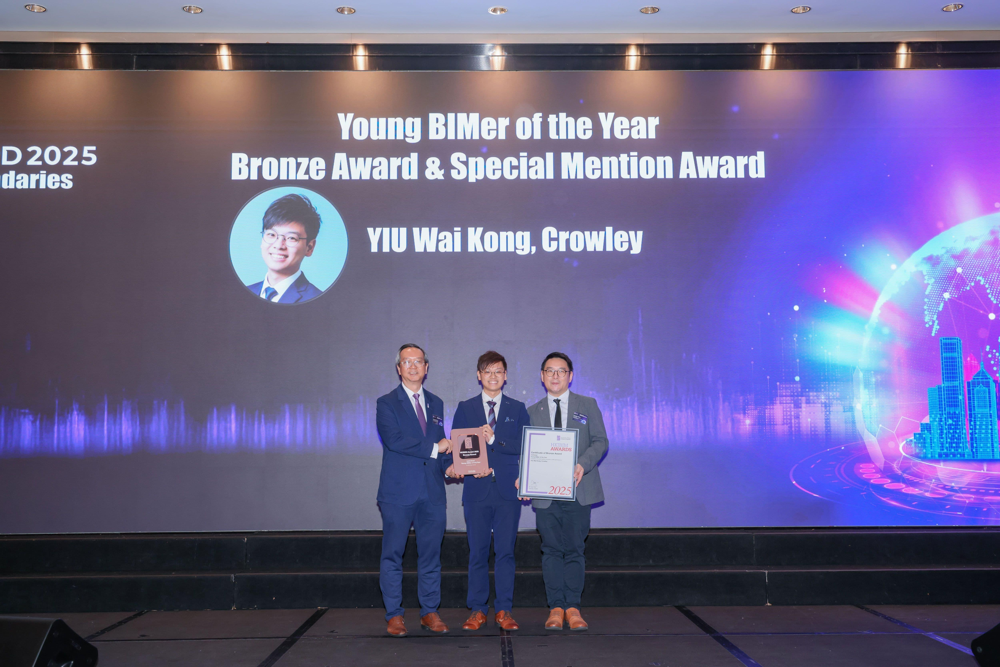
Young BIMer of the Year 2025
Bronze Award & Special Mention Award
Recognized by HKIBIM for individual excellence and commitment to innovation. Proven track record in high-stakes environments, directly contributing to the Silver Award-winning building project - C21W02 Automated Car Park A at HKBCF (Phase 1).
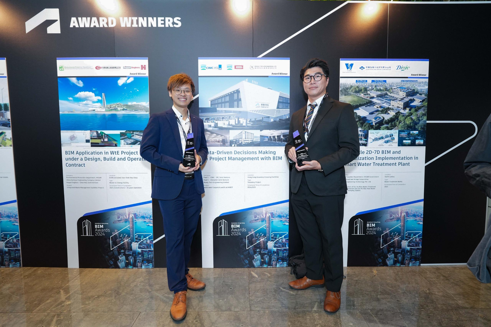
Hong Kong BIM Award Winner
Automated Carpark A and B at HKBCF
Validates proven capability and expertise as a BIM professional. Demonstrates high proficiency in leveraging advanced BIM methodologies and Autodesk tools to deliver high-quality, efficient, and innovative project solutions.
BIM Project Highlights
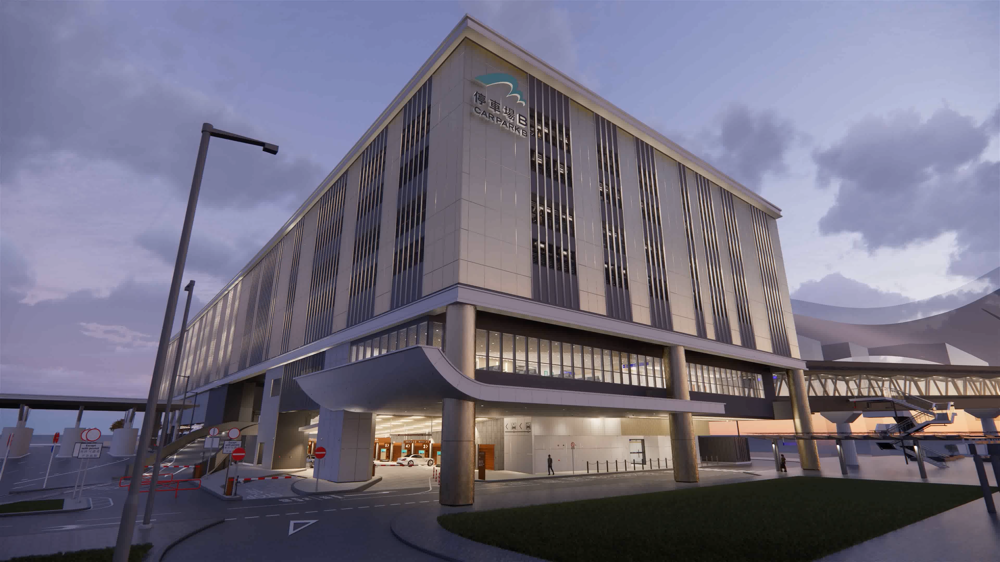
AAHK C21W21 Automated Car Park B at HZMB HKP
From 2022 to 2025, I served as the Asst. BIM Manager for the C21W21 project, a Design-Build-Operate (DBO) initiative featuring an automated car park B. My core contribution was establishing and managing the BIM execution plan, ensuring seamless digital collaboration between all parties across the project's entire lifecycle to mitigate risk and enhance delivery efficiency.
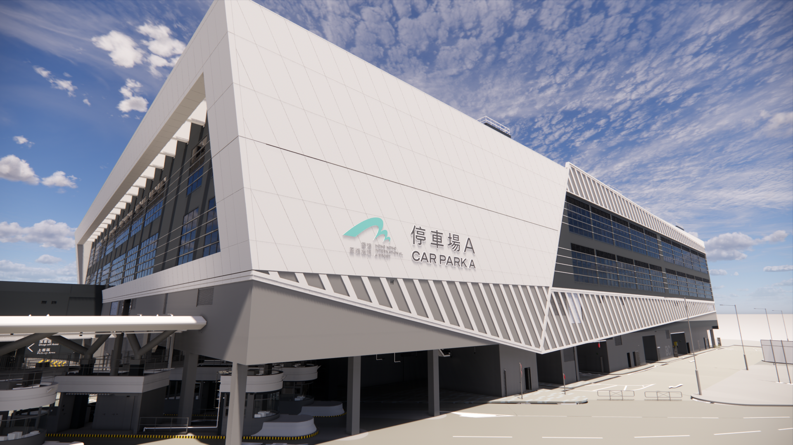
AAHK C21W02 Automated Car Park A at HKBCF
As the BIM Coordinator for project C21W21, the Automated Car Park, from 2021 to 2022, my role was to coordinate between the project and design teams. I also introduced and developed alternative solutions, such as VR simulations and left-hand driving configurations
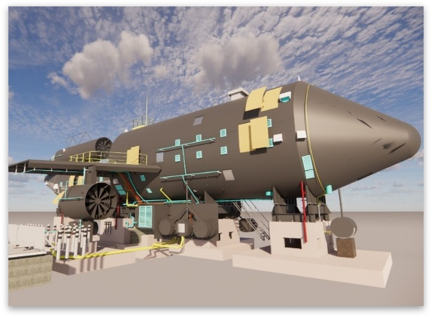
AAHK 3307 Fire Training Facility
On Contract 3307, the Fire Training Facility, I manage the As-built Stage (2024). This involves processing laser scan data to verify and update the BIM model, ensuring it is a true digital representation, and inputting the required asset information.
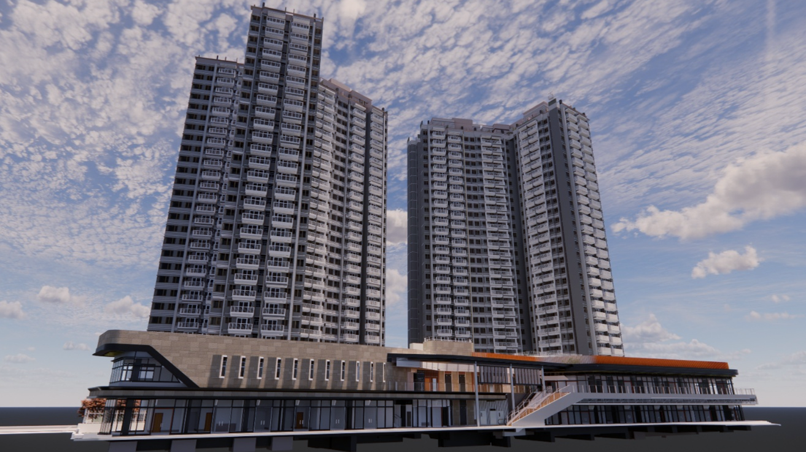
HKHS ARQ R2-3 & R2-4 Subsidized Sale Flat
As BIM Team Lead for the ARQ R2-3 and R2-4 residential projects, I owned all BIM deliverables from inception. Recognizing a key challenge, I initiated comprehensive training for my internal team and subcontractors, ensuring they could fully utilize our BIM services. This foundational investment proved highly effective, resulting in all subcontractors successfully adopting our Federated Model for enhanced coordination. This ensured construction perfectly matched the design intent, minimizing errors and rework on site.
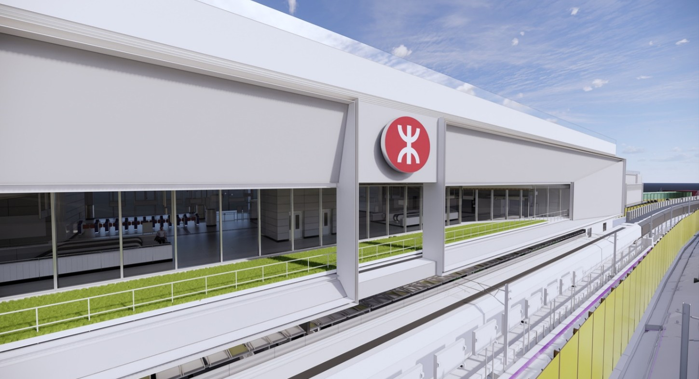
MTR C1202 Tung Chung East Station
As part of the MTR C1202 Tung Chung East Station Project, my primary responsibility is to produce a Monthly Phase Planning Video using Synchro 4D for client review. The key challenge lies in maintaining an accurate 4D model that integrates monthly as-built progress with a master program that changes frequently.
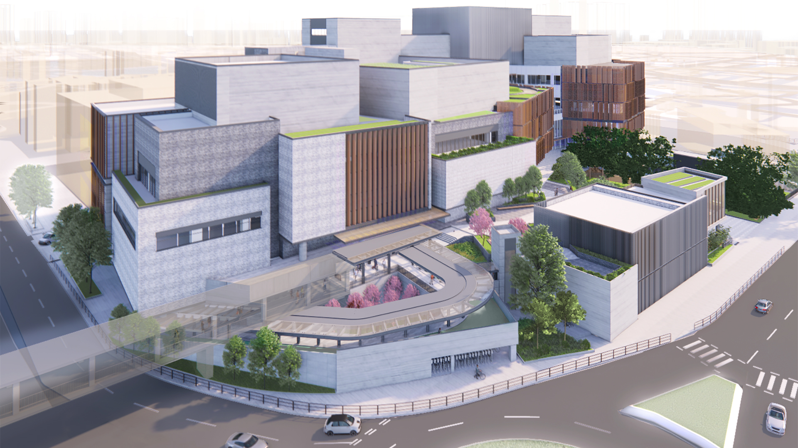
ArchSD New Territories Ease Cultural Centre
Served as BIM Coordinator (2023-2024) for the NTECC which is a major new cultural centre for Fanling, designed as a hub for the arts with large-scale performance venues, rehearsal spaces, and public facilities.
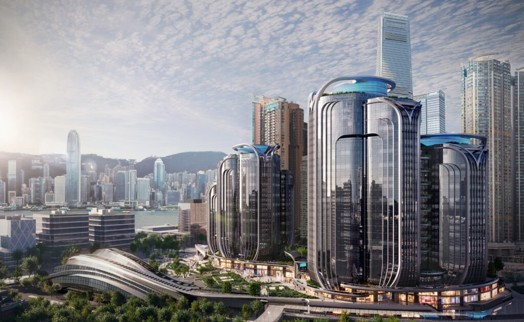
UBS IGC Tower 2B Fit-out
I lead progress meetings with the client to provide comprehensive project updates (2025 – Now). My responsibilities include managing Interior Design modeling and coordinating with the Main Contractor’s BIM Team. I am responsible for consolidating multi-disciplinary models, performing clash detection, and ensuring the timely delivery of CSD and CBWD by resolving technical issues and driving team accountability.
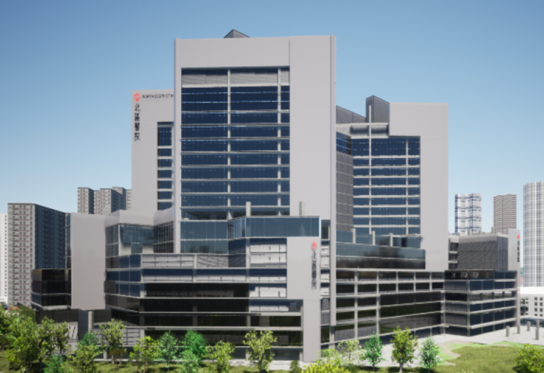
HA North District Hospital Expansion
Directed BIM coordination for the North District Hospital Expansion on behalf of the sub-contractor (Nun Tat), specifically managing the B2 to G/F wall and furniture construction scope. Facilitated technical meetings to establish rigorous drawing criteria, validated project deliverables, and drove the production of highly accurate, constructible shop drawings to ensure seamless on-site execution.
HKHA Pak Tin Estate Phase 12
Supported the Lead Architect (Hsin Yieh) by managing design-stage BIM workflows and authoring the project BEP. I spearheaded the development of the LOD 300 tender model and produced 3D render walkthroughs to facilitate client design reviews. Through rigorous spatial coordination and clash detection, I ensured design constructability and effectively mitigated the risk of abortive works.
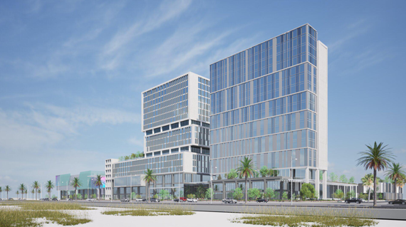
Refad Miraf District, KSA
Directed digital delivery for the mixed-use Refad Miraf District by authoring the BEP and MIDP, establishing CDE model segregation, and leading multidisciplinary coordination. Ensured LOD 400 compliance and drove the extraction of precise architectural and structural shop drawings to streamline site execution.
Beyond BIM: Innovation & Technology
VR Safety Training
Engineered an immersive VR Safety Training program by integrating Revit BIM models into Unity 3D to create highly realistic construction site simulations. The interactive modules trained personnel on critical safety protocols for lift shafts, gondola operations, and general site hazards, significantly enhancing situational awareness to ensure utmost on-site safety.
VR Fireman Training Demo
Developed an interactive firefighting training demo by integrating site-specific BIM models into Unity 3D. The Demo replicated a fire outbreak scenario, providing first responders with an immersive, spatially accurate virtual environment to practice and optimize future rescue operations.
Vision Hub on Web & 360 Panorama
Developed "Vision Hub," an interactive web and tablet-based platform that hosts 360-degree panoramas generated from Revit or directly on actual site. This solution enabled clients and stakeholders to seamlessly navigate and compare progressive design iterations across different project phases, significantly enhancing design review accessibility and user experience.
Indicatorization of BIM Clash (PowerBI)
Engineered advanced data visualization workflows by integrating BIM clash data into Power BI to establish intuitive tracking indicators. Utilized a versatile suite of visualization tools to showcase multifaceted BIM applications, transforming raw data into accessible visual reports that streamlined cross-disciplinary reviews.
VR Left-Hand Driving & Swept Path
Developed a specialized VR driving experience using Unity 3D to simulate left-hand navigation within a proposed automated car parking facility. The virtual prototype served as a critical design review tool, enabling the evaluation of driver sightlines, vehicle clearance, and operational flow to optimize the parking architecture for maximum safety and usability.
Synchro 4D Construction Simulation
Developed dynamic 4D construction sequences using Synchro 4D to visualize monthly progress and forecast future construction phases for MTR. Facilitated clear communication of complex scheduling data during progress meetings, aligning project stakeholders on critical path activities and milestone deliveries.
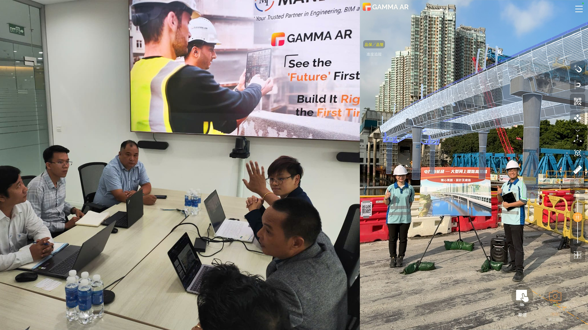
AR & Miniature Promotion
Served as a regional digital construction advocate, showcasing practical AR applications for on-site workflows across Hong Kong, China, Malaysia, and Vietnam. Facilitated cross-border knowledge sharing sessions to empower international project teams with advanced visualization tools that enhance site coordination and execution precision.
AI Intergration with Claude, Cursor & Monica
Conducted applied R&D focused on AI and LLM integration with Revit, establishing automated, cross-platform workflows. Utilized Claude, Cursor, Monica.im, and n8n to automate repetitive tasks, connect API endpoints, and enhance overall efficiency in building information modeling.
Leadership, Training & Education
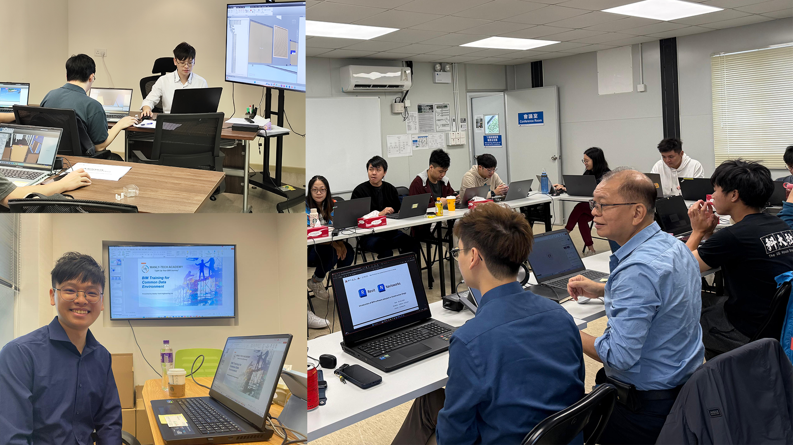
External Project Specific BIM Training
Spearheaded customized BIM training initiatives tailored to unique project requirements, focusing on the practical execution of Revit, Navisworks, and CDE platforms. Bridged technical knowledge gaps and streamlined stakeholder communication by empowering project teams with the essential digital tools required for effective BIM implementation.
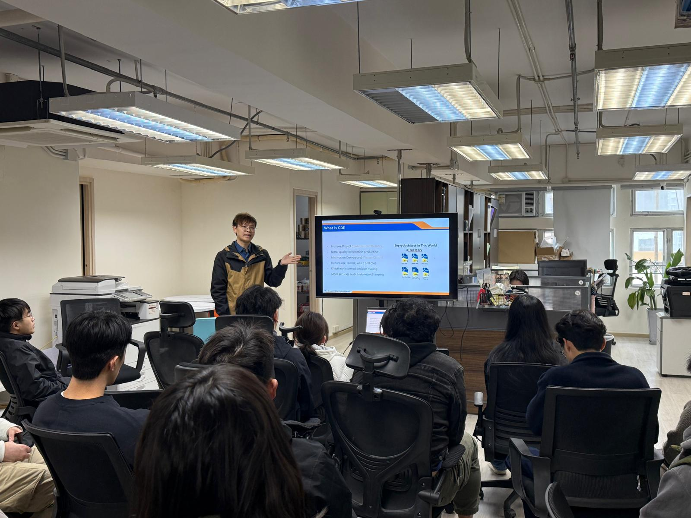
Internal Team & Global Training
Directed corporate-wide BIM upskilling initiatives, equipping internal teams with hands-on expertise in advanced modeling, coordination (Navisworks), and AR visualization (Gamma AR). Fostered a culture of technical excellence by delivering structured CCBC training programs, ensuring all staff meet industry-leading standards for digital construction.
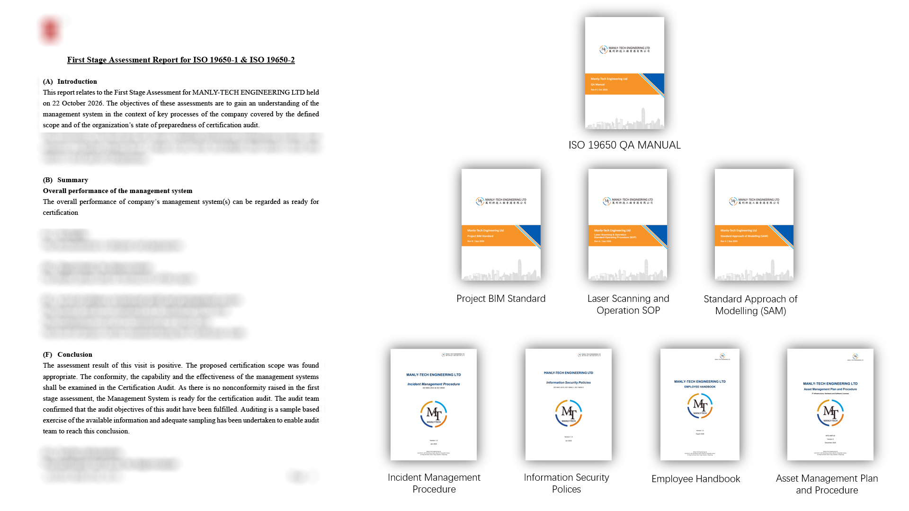
ISO 19650 Certification
Spearheaded the company-wide ISO 19650 Information Management System accreditation, successfully driving the firm to pass the formal Stage 1 audit. Authored the foundational QA manual, BIM Project Standards, and technical SOPs to establish a robust, globally compliant digital delivery framework.
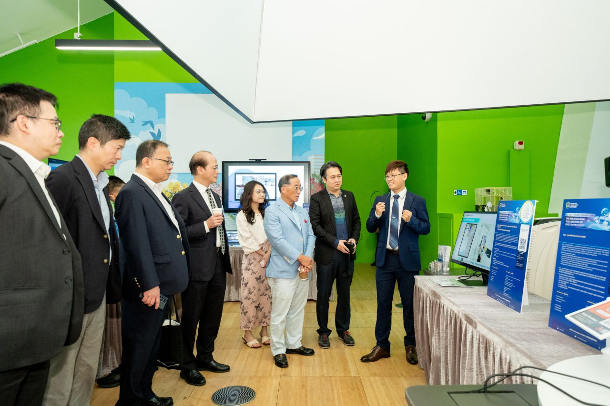
local Industry Sharing
Delivered impact industry keynote presentations and sharing sessions across major organizations such as CIC, HKIBIM, and CIPHE-HKB. Championed the deployment of Gamma AR in modern engineering environments, driving cross-industry awareness and knowledge-sharing for advanced construction technology.
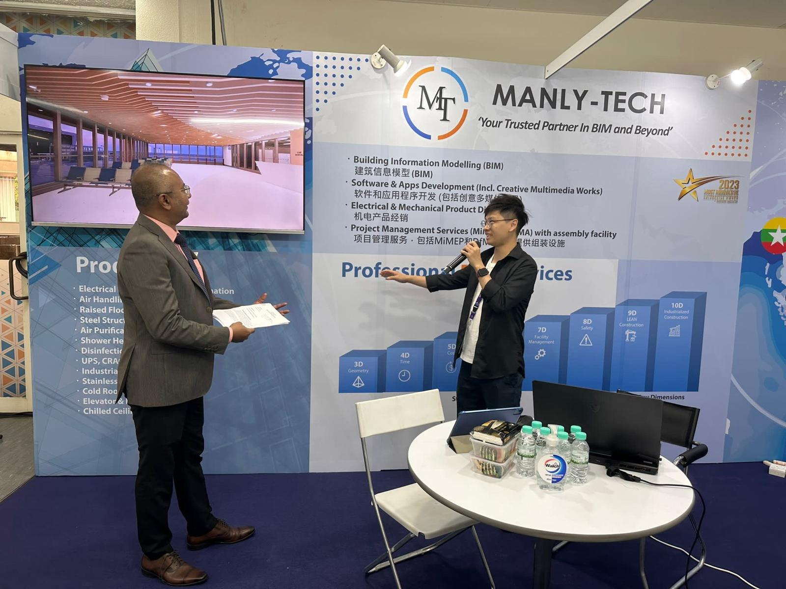
Global Technical Exchange & Integration
Represented the company at international industry exhibitions to showcase cutting-edge proprietary technologies and applications. Actively engaged with global peers to absorb advanced international BIM practices and innovative workflows, integrating these insights into future BIM project strategies for enhanced efficiency.
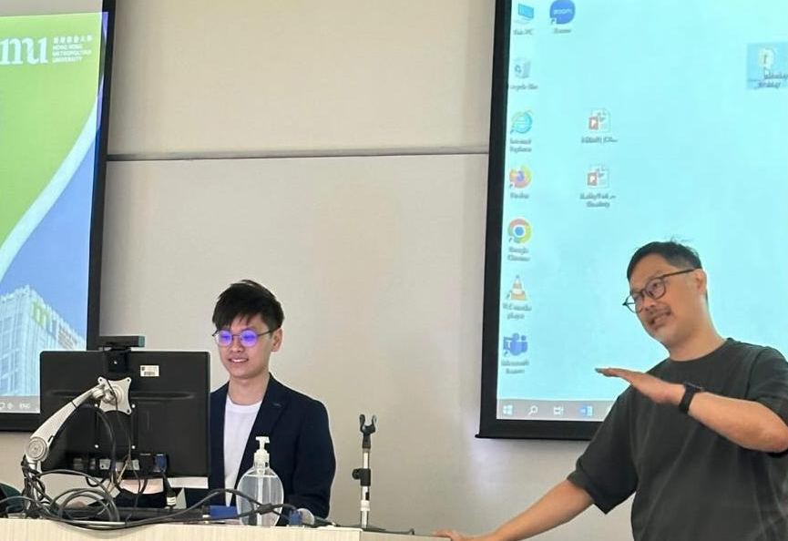
Alumni Sharing
Invited as an alumni guest speaker at Hong Kong Metropolitan University to share professional insights with students regarding BIM, animation, and multimedia career pathways. Guided students and alumni on how to successfully transition their creative and technical skills into the thriving construction industry.